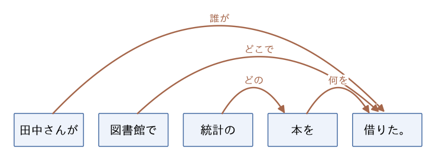
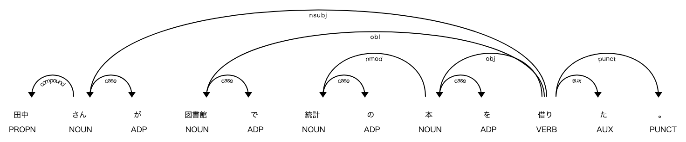

係り受け解析とかな漢字変換
係り受け解析
形態素解析で文を単語に分けても, どの語がどの語を説明しているかは分かりません. 文の中で, ある語句が別の語句に意味の上でつながる関係を係り受けといい, 係る側を係り元, 係られる側を係り先といいます. 文の係り受けを求める処理を係り受け解析 (dependency parsing) といいます.
日本語の係り受けは, 伝統的に文節 (「田中さんが」「図書館で」のように, 自立語 1 つとそれに付く助詞などをまとめた単位) を単位として考えます. 「田中さんが図書館で統計の本を借りた。」の係り受けは, 次の図のようになります.

矢印は係り元の文節から係り先の文節へ向かいます. 「統計の」は「本を」に係り, 「田中さんが」「図書館で」「本を」はどれも文末の「借りた。」に係ります. 述語の「借りた」に係る文節を助詞で見分けると, 誰が (〜が), どこで (〜で), 何を (〜を) 借りたかが分かります. 語順を「図書館で田中さんが統計の本を借りた。」と入れ替えても係り受けの関係は変わらないので, 係り受けを使えば, 語順によらずに「誰が何をしたか」を取り出せます.
GiNZA による係り受け解析
係り受け解析には GiNZA を使います. GiNZA は, 自然言語処理のライブラリ spaCy の上で動く日本語の解析器で, 形態素解析, 係り受け解析, 固有表現抽出をまとめて行います. pip や uv だけでインストールでき, Windows でも Mac でも同じ手順で使えます.
この節では GiNZA を使います. uv add しておいてください. ja_ginza は GiNZA が解析に使う学習済みのモデルです.
uv add ginza ja_ginzaspacy.load('ja_ginza') でモデルを読み込み, 文を渡すと解析結果が返ります. 各単語 (spaCy ではトークンと呼びます) について, 番号, 表層形, 原形, 品詞, 係り受けのラベル, 係り先の番号, 係り先の語を表示します.
import spacy
nlp = spacy.load('ja_ginza')
doc = nlp('田中さんが図書館で統計の本を借りた。')
for t in doc:
print(t.i, t.text, t.lemma_, t.pos_, t.dep_, t.head.i, t.head.text, sep='\t')
"""
0 田中 田中 PROPN compound 1 さん
1 さん さん NOUN nsubj 9 借り
2 が が ADP case 1 さん
3 図書館 図書館 NOUN obl 9 借り
4 で で ADP case 3 図書館
5 統計 統計 NOUN nmod 7 本
6 の の ADP case 5 統計
7 本 本 NOUN obj 9 借り
8 を を ADP case 7 本
9 借り 借りる VERB ROOT 9 借り
10 た た AUX aux 9 借り
11 。 。 PUNCT punct 9 借り
"""GiNZA の係り受けは, 文節ではなく単語を単位とし, 多くの言語で共通に使われるラベルの体系 (Universal Dependencies) で関係の種類を表します. 助詞は前の名詞に case で係り, 名詞が述語に係ります. この文に現れたラベルの意味は次のとおりです.
| ラベル | 意味 | この文の例 (係り元 → 係り先) |
|---|---|---|
nsubj |
主語 | さん → 借り |
obj |
目的語 | 本 → 借り |
obl |
述語を補う語 (場所, 時, 相手など) | 図書館 → 借り |
nmod |
名詞を修飾する名詞 | 統計 → 本 |
compound |
複合語の一部 | 田中 → さん |
case |
格助詞 (が, で, の, を など) | が → さん |
aux |
助動詞 | た → 借り |
punct |
句読点 | 。 → 借り |
ROOT |
文の中心となる語 (係り先は自分自身) | 借り |
spaCy の displacy を使うと, 係り受けを図にできます. 次のコードは図を SVG ファイルに保存します. 保存した dep.svg をブラウザで開くと, 図が表示されます.
import spacy
from spacy import displacy
nlp = spacy.load('ja_ginza')
doc = nlp('田中さんが図書館で統計の本を借りた。')
svg = displacy.render(doc, style='dep', jupyter=False,
options={'compact': True, 'distance': 100})
with open('dep.svg', 'w', encoding='utf-8') as f:
f.write(svg)次の図は, 同じ文を compact を指定せずに描いたものです.

各単語の下に品詞, 弧の上にラベルが付いています. displacy の矢印は係り先から係り元へ向かうので, 文節の図とは矢印の向きが逆です. 「借り」から出る 3 本の長い弧 (nsubj, obl, obj) が「さん」「図書館」「本」に向かっていて, 文節の図の「田中さんが」「図書館で」「本を」から「借りた。」への矢印と同じ関係を表しています.
GiNZA は, 単語の係り受けを文節の係り受けにまとめる関数も持っています. ginza.bunsetu_spans は文を文節に区切り, ginza.bunsetu_span は単語を含む文節を返します.
import spacy
import ginza
nlp = spacy.load('ja_ginza')
doc = nlp('田中さんが図書館で統計の本を借りた。')
for b in ginza.bunsetu_spans(doc):
head = ginza.bunsetu_span(b.root.head) # 係り先の文節
print(b.text, '→', head.text if head != b else '(文末)')
"""
田中さんが → 借りた。
図書館で → 借りた。
統計の → 本を
本を → 借りた。
借りた。 → (文末)
"""b.root は文節の中心となる語 (「田中さんが」なら「さん」) です. その係り先の語を含む文節が, 文節の係り先になります. 結果は文節の図と一致します.
係り受けから「誰が何をしたか」を取り出す
係り受けを使って, 複数の文から「誰が」「何を」「どうした」を取り出してみます. 各文の中心 (ROOT) の語を述語とし, 述語に nsubj で係る語を「誰が」, obj で係る語を「何を」とします.
import spacy
import ginza
nlp = spacy.load('ja_ginza')
def phrase(token):
# token に係る語をまとめた句 (token 自身の格助詞は除く)
return ''.join(t.text for t in token.subtree
if not (t.dep_ == 'case' and t.head == token))
def predicate(token):
# 述語の文節から句読点を除いたもの
return ''.join(t.text for t in ginza.bunsetu_span(token) if t.pos_ != 'PUNCT')
text = ('田中さんが図書館で統計の本を借りた。'
'先生は学生にレポートの締め切りを伝えた。'
'売店では昼休みに弁当がよく売れる。'
'佐藤さんがデータサイエンス実践を履修した。')
for sent in nlp(text).sents:
root = sent.root # 文の中心 (ROOT) の語
who = [phrase(c) for c in root.children if c.dep_ == 'nsubj']
what = [phrase(c) for c in root.children if c.dep_ == 'obj']
print(f'誰が: {who}, 何を: {what}, どうした: {predicate(root)}')
"""
誰が: ['田中さん'], 何を: ['統計の本'], どうした: 借りた
誰が: ['先生'], 何を: ['レポートの締め切り'], どうした: 伝えた
誰が: ['弁当'], 何を: [], どうした: 売れる
誰が: ['佐藤さん'], 何を: ['データサイエンス実践'], どうした: 履修した
"""nlp(text).sents は解析結果を文ごとに区切ったもので, root.children は述語に直接係る語の一覧です. phrase は, 語に係る語 (token.subtree) をつないで「統計の本」「田中さん」のような句にする関数で, 句の末尾の格助詞 (「が」「を」) は除いています. 述語は, 助動詞も含めるために「借りた」のような文節の形で表示しています.
3 文目の「誰が」は「弁当」です. nsubj は文法上の主語 (述語「売れる」に対して「〜が」で示される語) を表し, 動作をした人とは限りません. 弁当を売ったのは売店, 買ったのは客です. 2 文目では「先生は」が nsubj になっています. 「は」は話題を示す助詞で, 格助詞の「が」とは働きが違いますが, GiNZA は述語との関係から「先生」を主語と判定しています.
4 文目の「データサイエンス実践」は 1 つの句として取り出せていますが, GiNZA は内部では「データ」「サイエンス」「実践」の 3 語に分け, compound でつないでいます. 一方で「千葉商科大学」は, MeCab (unidic-lite) の分割と違って最初から 1 語になります.
import spacy
nlp = spacy.load('ja_ginza')
doc = nlp('千葉商科大学でデータサイエンス実践を履修した。')
print([t.text for t in doc])
"""
['千葉商科大学', 'で', 'データ', 'サイエンス', '実践', 'を', '履修', 'し', 'た', '。']
"""形態素解析器ごとに辞書の中身が違うので, 分析に使う固有名詞がどう区切られるかは, 実際に解析して確かめます. GiNZA (内部で使っている形態素解析器 Sudachi) にも, MeCab とは別の形式のユーザ辞書の仕組みがあります.
この節に対応する演習は, Exercise DSP9-2です.